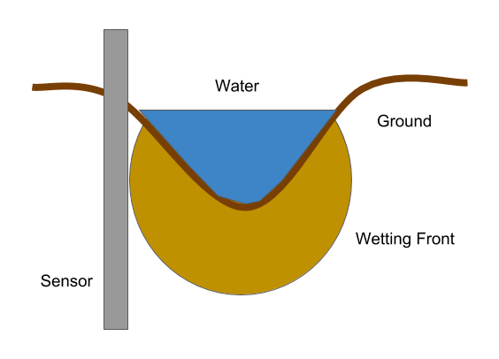
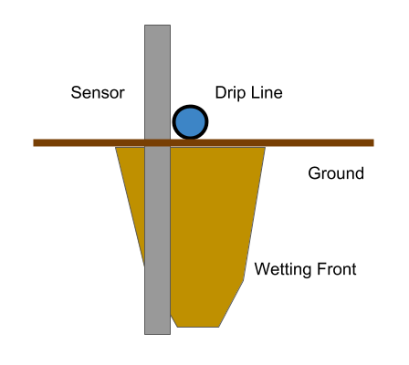

In this tutorial, we will cover how to set up the detector, how to take readings, and how to use results to improve your irrigation schedule.
The electronic wetting front detector has two parts: the sensor and the reader.
The sensor is an inexpensive device shaped like a cylinder. It has metal rings at various depth to measure the resistivity of the soil, which the reader uses to calculate the wetting front depth. Many sensors can be deployed across the field to measure the wetting front at different locations. Sensors are passive and do not require any batteries. They need to be used in conjunction with the reader to measure the waterfront.
The reader is a battery powered electronic device that provides power to the sensor and uses its measurements to calculate the wetting front depth. Only one reader is needed to read from all the sensors. To take a reading, the user just needs to attached the reader to the top of the sensor, and the reader’s LEDs will light up to indicate the wetting front depth. This will be described in more detail in the following sections
For furrow irrigation, the sensor should be placed at the edge of the furrow.
For drip irrigation, the sensor should be placed beside the drip line.
The sensor requires a hole of 5mm diameter and 40mm depth. You can tell whether the hole is deep enough by putting the sensor in. If the hole has the right depth, the red line on the sensor should be at ground level
The best tool for digging the sensor hole is a 5mm auger:
If an auger is not available, you can also use a spade and trowel:
If you are unsure about how to dig a hole, these two tutorials might be helpful:
Digging a hole with spade and trowel
When you are happy with the hole, push the sensor into the hole until the red line is at ground level. Then pack in soil around the edge until you can no longer wobble the sensor in the hole.
To get a measurement from the sensor, all five metal screws need to be in contact with the corresponding metal screws on the sensor. To do this, place the reader such that the protruding parts of the sensor fit into the holes in the reader. Once in this position, push the sensor down until you feel that the springs are tight. Then turn the reader on to take a measurements.
The red highlighted parts should fit into each other:
When the wetting front reaches a certain depth, a corresponding LEDs on the reader will light up.
This simple tool will help you interpret the result and give recommendations:
The sensor can be left in the ground for many years. It will not corrode as the metal parts are made of stainless steel. However, over time the exposed parts of the wires could become more fragile through wear and eventually break, at which point the sensor would need to be replaced. To minimize the deterioration of the wires, try not to move or twist the sensor after it has been placed into the ground.
The exposed wires on the outside:
The reader uses 3 AAA batteries and has an expected battery life of half a year. It is recommended that you switch the reader off while not using to minimise battery consumption. It is also possible (but not yet implemented) to use rechargeable batteries and charge the reader with mains electricity, if it is available.